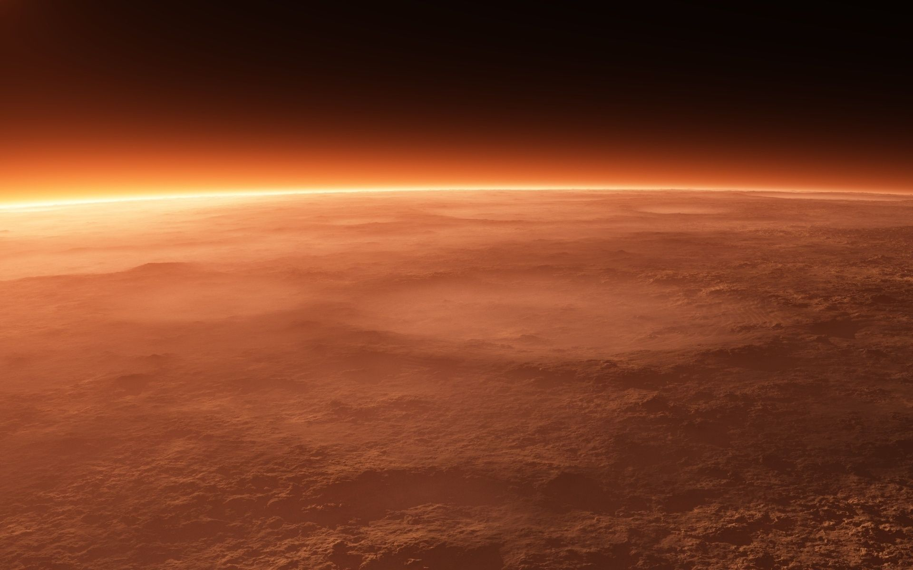
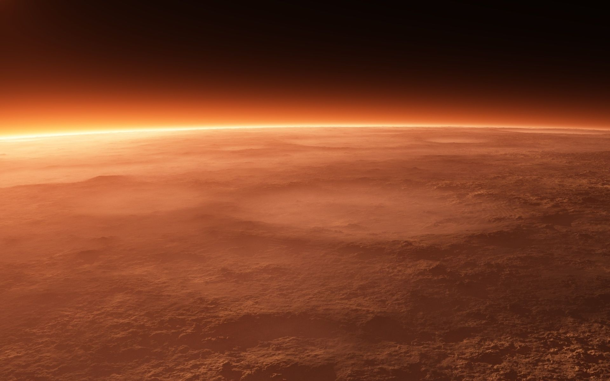

Pollution terrestre
Pollution spatiale
Pollution planetaire
Pollution terrestre
Pollution spatiale
Pollution planetaire

La pollution
planétaire
Scrollez pour découvrir la réalité
pollution des planétes
pollution bactérienne
impact de l'homme
Observer vous même
Une expérience en réalité virtuelle
La pollution n'est pas que sur Terre ou dans les océans !
Depuis 1957, elle est aussi dans l'espace pour la voir il
suffit de lever les yeux et de se préoccuper de ce qu'il se
passe au dessus de nos têtes.
Chaque année des milliers de nouveaux débris se mettent
en orbite autour de la Terre. Certains sont envoyés par
l'Homme, d'autres sont la conséquences du trop grand
nombre de débris déjà présents.
Les risques de cette pollution sont nombreux, les scientifiques
l'ont bien compris et maintenant il faut agir pour éviter
d'engendrer de nouveaux problèmes liés à cette pollution.

Le début de la conquête de l'espace a vu le jour en 1957 par
le lancement de Spoutnik 1 par l'Union Soviétique.
Si cette conquête a été vu comme une avancée
technologique majeur elle a aussi ouvert la porte à une
nouvelle forme de pollution.
En effet, depuis ce premier lancement on dénombre près de
60 000 engins spatiaux envoyés en orbite autour de la Terre.
Au début cette conquête était seulement une histoire entre
les grands états mais elle s'est rependu et depuis quelles
que années de grandes entreprises ont rejoins la conquête
et ont envoyés leurs propres engins dans l'espace.

Aujourd'hui, nous allons dans l'espace sans savoir s'il existe une autre forme de vie extra-terrestre.
Et si c'etait le cas, si d'autres espèces vivaient dans l'espace ou sur les corps célestes que nous visitons ?
Avec tous les débris spatiaux, les gaz et les bactéries, est-ce que nous ne serions pas en train de totalement
modifier leur système de vie, leur biodiversité ?
Ce sont des questions que les scientifiques sont en train de se poser, est-ce que nous ne serions pas en train
de totalement modifier oo détruire l'environnement d'autres espèces ou être vivants ?L'être humain est en
train de s'imposer dans l'espace, il existe même des projets pour habiter sur la Lune ou sur Mars au risque de
déranger d'autres espèces deja présentes.

 
